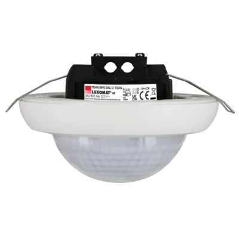
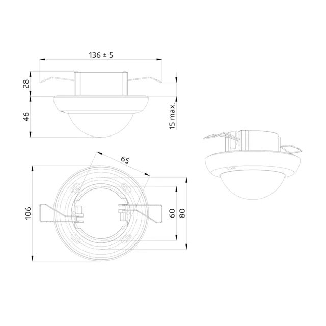
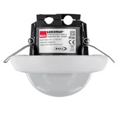
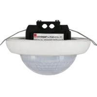

Detector de presencia DALI-2 de techo PD4N-BMS (ref. 93546)
DALI-2 (BMS) Detector de presencia PIR con cobertura de 360° y un alcance de hasta Ø24m (450 m²), dispositivo de entrada DALI-2.
- Referencia
- 93546
- Modelo
- PD4N-BMS DALI-2
- EAN
- 4007529935468
- Sistema
- DALI-2 (BMS)
- Alcance
- máx. Ø 24 m transversal | máx. Ø 8 m frontal | máx. Ø 6.4 m actividad sedentaria
- Cobertura
- 450 m² / 2.5 m Altura de montaje

Descripción y funciones
- Multisensor DALI-2 (input device) de gran alcance
- Producto certificado DALI-2
- Alimentado vía bus DALI
- Potentes LED de localización para una puesta en funcionamiento rápida y segura
- Tecnología DALI multimaster según IEC 62386 parte 103
- La característica 0 facilitada por el bus DALI ofrece información relativa a la ocupación de la estancia y la detección de movimiento, de conformidad con la norma IEC 62386 Parte 303
- La característica 1 facilitada por el bus DALI ofrece valores de lux, de conformidad con la norma IEC 62386 Parte 304
- Es posible realizar la configuración a través de un controlador de aplicación multimaster de otro fabricante. El controlador debe cumplir con la norma IEC 62386 Parte 103/303/304.
- Medición de luz mixta mediante sensor crepuscular interno y externo
- Para montaje en falso techo o en superficie
- Accesorio para montaje en superficie disponible opcionalmente
- Es posible acotar el área de detección utilizando las carátulas obturadoras suministradas
- Ajuste individual de la sensibilidad para cada sensor PIR
- Los LEDs de estado pueden activarse o desactivarse
Especificaciones técnicas
| Referencia / EAN | 93546 / 4007529935468 |
|---|---|
| Tensión de alimentación | del bus DALI, máx. 22.5 V DC |
| Dimensiones | Ø 106 x 68 mm |
| Configuración | vía bus DALI y aplicación compatible con multisensores DALI según IEC62386, partes 101, 103, 303 y 304 |
| Consumo de corriente | 7 mA |
| Tiempo de asentamiento | 200 ms |
| Área de detección | horizontal 360° (Montaje en techo) |
| Alcance | máx. Ø 24 m transversal | máx. Ø 8 m frontal | máx. Ø 6.4 m actividad sedentaria |
| Área de cobertura (movimiento transversal) | 450 m² / 2.5 m Altura de montaje |
| Altura de montaje mín. / máx. / recomendada | 2 m / 10 m / 2.5 m |
| Grado de protección / Clase | IP20 / Clase II |
| Resistencia a impactos | IK04 |
| Valores de luz medidos | 0 - 4095 Lux, Medición de luz mixta (natural+artificial) |
| Temperatura ambiental | -25 °C a +55 °C |
| Carcasa | Policarbonato de alta calidad |
| Color de material | blanco mate, similar RAL9010 |
Aplicaciones
Escaleras, Despachos, Oficinas diáfanas, Salas de reuniones, Aulas / salas de seminarios, Polideportivos/Logísticos.
Plano de dimensiones

Documentación y descargas
Disponibles en la ficha oficial:
- Generar documento de prescripción 93546
- CE declaration of conformity 93546 (en)
- Breve manual
- Operating guide
- EPD (PEP)
- BIM data 93546 (es)
Partida para el Generador de precios / BC3: [dato a confirmar por el cliente]
Preguntas frecuentes
¿Qué alcance tiene el PD4N-BMS DALI-2?
Según la ficha técnica de B.E.G., el alcance máximo es Ø 24 m en movimiento transversal, Ø 8 m en movimiento frontal y Ø 6,4 m en actividad sedentaria. El área de cobertura en movimiento transversal es de 450 m² a 2,5 m de altura de montaje.
¿Necesita alimentación de 230 V?
No. El PD4N-BMS DALI-2 se alimenta del bus DALI (máx. 22,5 V DC) con un consumo de corriente de 7 mA.
¿Se puede usar con un controlador DALI de otro fabricante?
Sí. B.E.G. indica que la configuración puede hacerse mediante un controlador de aplicación multimaster de otro fabricante, siempre que cumpla la norma IEC 62386 partes 103, 303 y 304.
¿A qué altura se puede montar?
Altura mínima 2 m, máxima 10 m y recomendada 2,5 m. Se puede montar en falso techo o en superficie (accesorio de superficie opcional).
¿Qué información envía al bus DALI?
La instancia 0 informa de ocupación y movimiento (IEC 62386-303) y la instancia 1 envía valores de luz en lux (IEC 62386-304). El rango de medición es de 0 a 4095 lux, con medición de luz mixta (natural + artificial).
¿Qué documentación técnica está disponible?
En la ficha oficial están la declaración CE, el manual breve, la guía de funcionamiento, la EPD (PEP), los datos BIM en español y un generador de texto de prescripción.
¿Cuál es su precio y dónde se compra?
B.E.G. vende sus productos exclusivamente a través de distribuidores de material eléctrico. Precio de referencia: [dato a confirmar por el cliente].
Productos relacionados

PD4N-M-DACO DALI-2

PD4N-KNXs-ST-FT
¿Dudas sobre qué modelo elegir? Consulte la guía para elegir un detector de presencia o estime el ahorro con la calculadora.